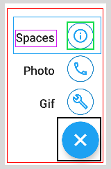

Jetpack Compose: Multi-Button Fab
2nd September 2022
Fab buttons are an extremely common piece of furniture within the household of any Android application these days. Ones which show multiple buttons at once are more common; think Twitter or MyFitnessPal.
I'm making a little Twitter clone and the first part I am tackling is the mult-button Fab. The full code for that can be found here though I don't guarantee it will be as below.
Going to walk through making the below multi-button Fab in this post.

Planning the layout
The first step is to plan out what elements this is going to be built of.

- The red box is going to be a column, this will be our container
- The blue box is a row to house our text and icon side-by-side
- The purple and green box are for the text view and icon inside the above row
- Finally the black box is our FAB button
The code below has been shortened for brevity. The full code can be found here

@Composable
fun ActionButton(...) {
//Our red box
Column(modifier, horizontalAlignment = Alignment.End) {
if (transition.currentState == MultiFabState.EXPANDED) {
MultiFabItems.values().forEach {
MiniFloatingActionButton(...)
Spacer(...)
}
}
//Our black box
FloatingActionButton(
onClick = {
onStateChanged(...)
}) {
Icon(...)
}
}
}
@Composable
private fun MiniFloatingActionButton(
item: MultiFabItems
onFabItemClicked: (item: MultiFabItems) -> Unit) {
//Our blue box
Row(...) {
//Our purple box
Text(...)
Spacer(...)
//Our green box
Surface(shape = CircleShape, ..) {
IconButton(...) {
Icon(...)
}
}
}
}
Expanding our buttons
Our FAB has 2 states. Collapsed or Expanded, it will be collapsed by default. We are going to hold this as a piece of state using
var fabState by remember { mutableStateOf(MultiFabState.COLLAPSED) }. I also use this to rotate my FAB button
when it is selected and to expand the sub-buttons.
val transition = updateTransition(targetState = fabState, label = "fab_transitions")
val rotation: Float by transition.animateFloat(label = "fab_rotation") { s: MultiFabState ->
if (s == MultiFabState.EXPANDED) 45f else 0f
}
val scale: Float by transition.animateFloat { state ->
if (state == MultiFabState.EXPANDED) 56f else 0f
}
val alpha: Float by transition.animateFloat(transitionSpec = {
tween(durationMillis = 20)
}, label = "") { state ->
if (state == MultiFabState.EXPANDED) 1f else 0f
}
if (transition.currentState == MultiFabState.EXPANDED) {
MultiFabItems.values().forEach {
MiniFloatingActionButton(...)
}
}
For a more in depth guide there is a great one here